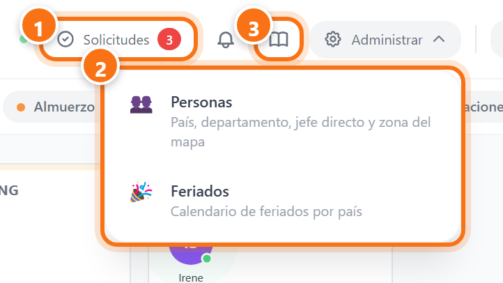
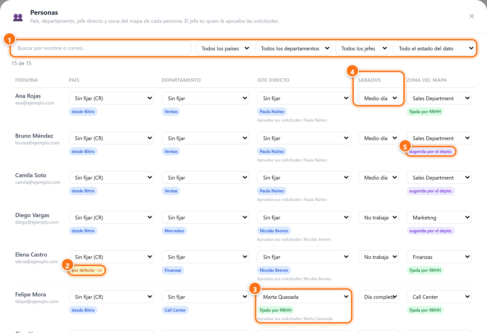
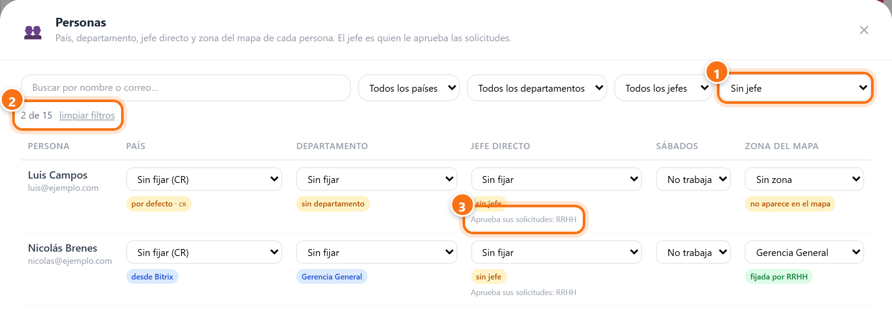
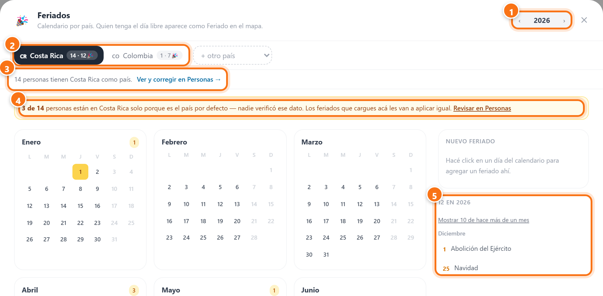
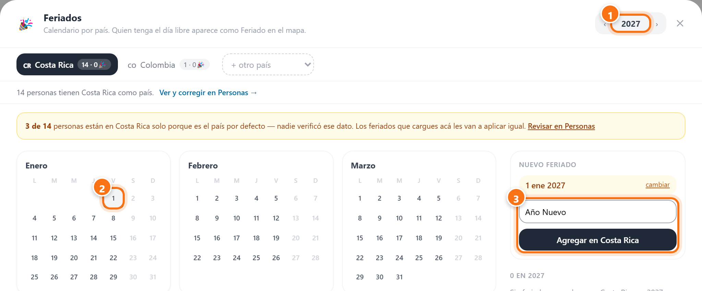
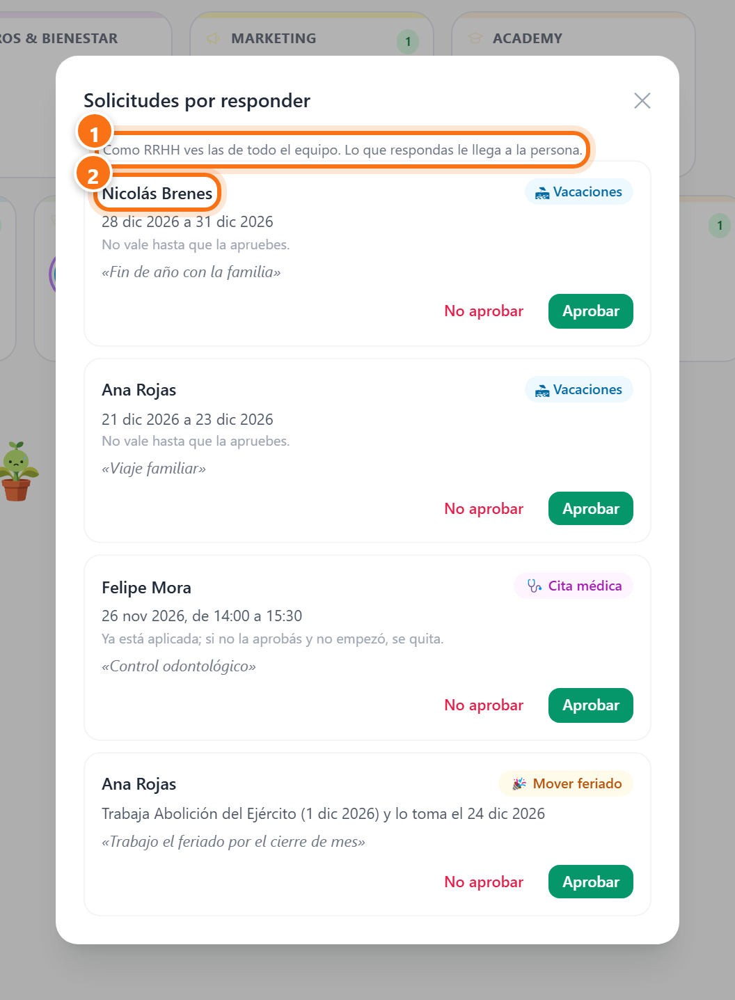
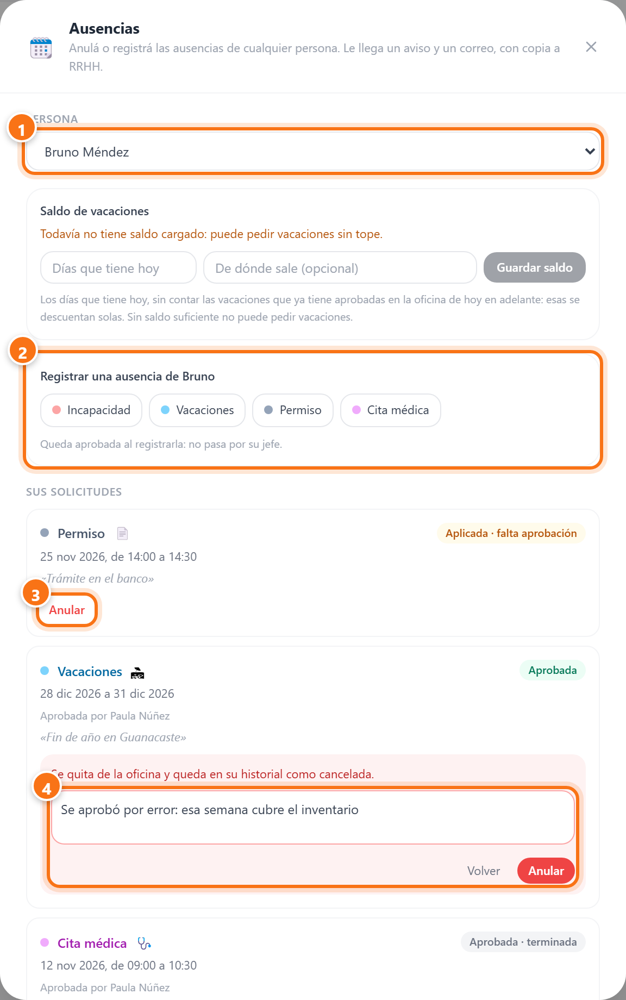
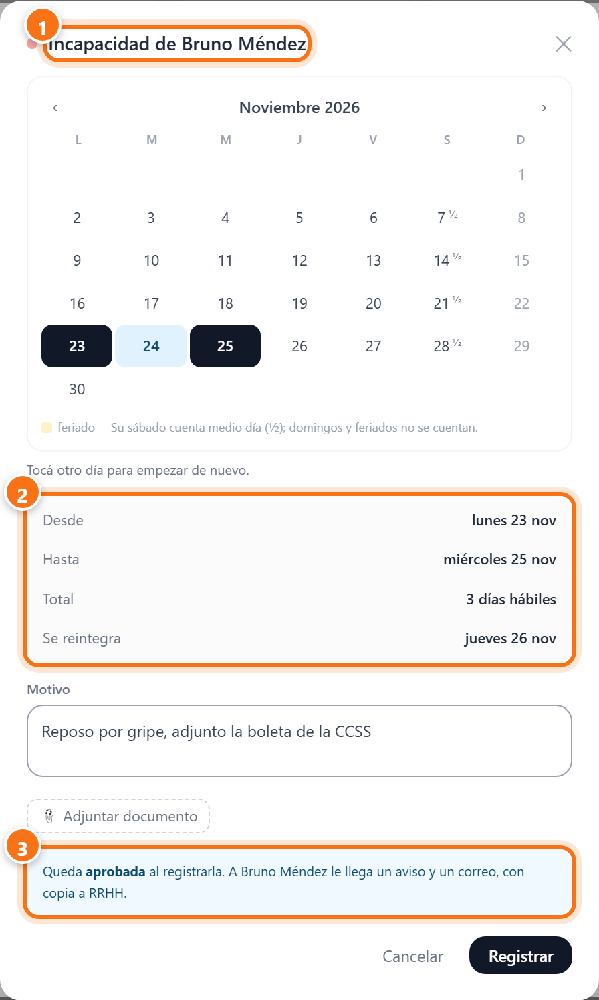
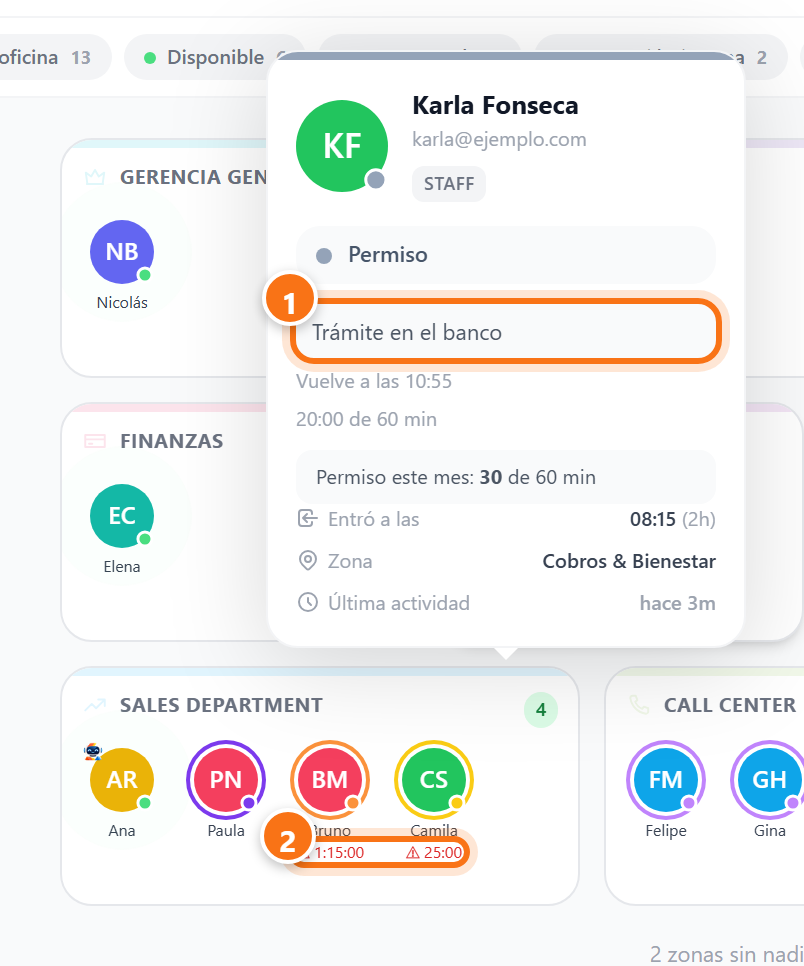
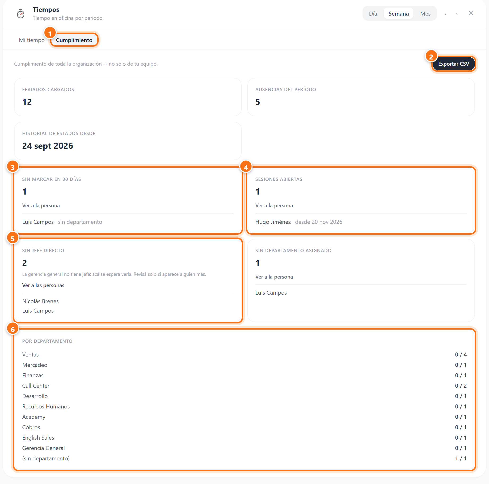

Índice de la guía
Oficina Virtual para RRHH
Como RRHH usás la oficina igual que todos, y respondés solicitudes igual que un jefe. Esta guía explica lo que se suma por administrar la oficina. Lo básico está en la guía para colaboradores, y cómo responder solicitudes, en la guía para jefes.
Las capturas son de una oficina de ejemplo. En ellas, Irene Salas es de RRHH. Los nombres son inventados.
Dónde está lo tuyo
Con el permiso de administrar la oficina, en el encabezado aparece Administrar. Ahí están las pantallas de RRHH.

- 1Solicitudes: todas las que esperan respuesta en la empresa.
- 2Administrar: Personas, Ausencias y Feriados.
- 3Las guías de uso: como RRHH ves las tres.
Personas: quién es quién
Esta tabla decide a quién le llegan las solicitudes de cada persona, qué feriados le tocan, cómo cuenta su sábado y dónde aparece en el mapa. Es el único lugar donde se corrigen esos datos: el organigrama los muestra, pero no los cambia.

- 1Buscar y filtrar por nombre, país, departamento, jefe o por lo que falta (ver más abajo).
- 2País: decide qué feriados le tocan. «Por defecto» quiere decir que nadie lo verificó y le tocan los de Costa Rica.
- 3Jefe directo: quien le aprueba las solicitudes y lo ve en Tiempos. Debajo dice quién las aprueba. Sin jefe, las aprobás vos.
- 4Sábados: no trabaja, medio día o día completo. Cuenta en sus vacaciones, en Tiempos y en el cumplimiento.
- 5Zona del mapa: dónde aparece su muñequito. «Sugerida por el depto.» quiere decir que la oficina la dedujo por el nombre del departamento; elegirla en la lista la deja fija.
La etiqueta debajo de cada dato lo dice. Azul: viene de Bitrix. Verde, «fijado por RRHH»: alguien lo corrigió acá, y eso gana sobre Bitrix. Amarilla: falta, o es el valor por defecto. Elegir «Sin fijar» devuelve el dato a lo que diga Bitrix.
Cambiar el departamento también cambia el jefe: pasa a ser quien dirige el departamento nuevo, salvo que le hayas fijado un jefe a mano.
Encontrar lo que falta
El último filtro busca lo que está incompleto: país sin verificar, sin departamento, sin jefe, sin zona, zona sugerida sin confirmar, o lo que ya fijó RRHH.

- 1Elegí qué buscar, por ejemplo Sin jefe.
- 2Cuántas personas aparecen. «Limpiar filtros» vuelve a mostrar a todas.
- 3Sin jefe, sus solicitudes te llegan a vos.
Que la gerencia general no tenga jefe está bien. Revisá a cualquier otra persona que aparezca.
Feriados
Los feriados se cargan por país. A cada persona le tocan los del país que tiene en Personas, y ese día aparece como Feriado en el mapa.

- 1El año.
- 2Un país por pestaña. El primer número es cuánta gente tiene ese país; el segundo, cuántos feriados hay cargados.
- 3Ver y corregir en Personas abre Personas filtrada por ese país.
- 4El aviso amarillo: gente que está en ese país solo por defecto. Revisala antes de cargar feriados, porque igual le van a tocar.
- 5La lista de los que vienen. Los de hace más de un mes se esconden. Para borrar uno, pasá el mouse por encima, tocá ✕ y confirmá.
Cargar un feriado

- 1Elegí el año. Por ejemplo, antes de que termine el año, el que viene.
- 2Tocá el día en el calendario.
- 3Escribí el nombre y tocá Agregar en Costa Rica (o en el país de la pestaña).
Cuando alguien trabaja un feriado y lo toma otro día, lo aprueba su jefe directo o vos: esos pedidos también te llegan a Solicitudes. Si la persona no tiene jefe, queda aprobado solo y te llega un aviso.
Solicitudes de toda la empresa
En Solicitudes ves todos los permisos, citas, vacaciones y feriados movidos que esperan respuesta, de cualquier equipo. Podés responder cualquiera, igual que su jefe. Cómo se hace está en la guía para jefes.

- 1Como RRHH ves las de todos.
- 2Quien no tiene jefe (acá, Nicolás): esas solicitudes te tocan a vos.
Te llega un aviso en la oficina, en Windows y en Bitrix (a quienes tienen el rol «RRHH Oficina»), y un correo a rrhh@grupovla.com. Si pasan más de 20 horas sin respuesta, también te llega el recordatorio de las 9:00.
Lo que te llega por correo
Cada vez que alguien aprueba o no una solicitud o un feriado movido, el correo a la persona va con copia a rrhh@grupovla.com y a quien respondió. Así queda registro sin que nadie tenga que reenviar nada. Y si alguien cancela algo que ya estaba aprobado, te llega un correo para que lo actualices.
Si vos no tenés jefe, tus propias solicitudes quedan aprobadas solas.
Anular o registrar una ausencia
En Administrar → Ausencias elegís a una persona y ves todas sus solicitudes. Desde ahí podés anular una (por ejemplo, unas vacaciones que su jefe aprobó por error) o registrar una ausencia por ella (por ejemplo, una incapacidad que te trajo en papel).

- 1La persona.
- 2Registrar una ausencia: incapacidad, vacaciones, permiso o cita médica. Queda aprobada al registrarla, sin pasar por su jefe.
- 3Anular: está en cada solicitud pendiente o aprobada, aunque ya haya empezado.
- 4El motivo es obligatorio y le llega a la persona. Al anularla se quita de la oficina y queda en su historial como cancelada.
Registrar por otra persona
Se abre el mismo formulario que usa la persona, con su nombre arriba.

- 1Para quién es.
- 2Los días se cuentan con su sábado y sus feriados, no con los tuyos.
- 3Queda aprobada. A la persona le llega un aviso y un correo, con copia a RRHH.
Las vacaciones y las incapacidades se pueden registrar hasta 60 días hacia atrás, por ejemplo una incapacidad que llegó tarde.
Lo que ves en el mapa
Como RRHH ves en la tarjeta de cualquier persona el motivo de sus permisos, citas médicas e incapacidades, y el reloj en color de quien se pasó de la hora. El resto del equipo no ve esos motivos, porque pueden ser datos de salud.

- 1El motivo del permiso.
- 2Los relojes en rojo de quien se pasó. Cómo leerlos está en la guía para jefes.
Cumplimiento
En Tiempos, la pestaña Cumplimiento dice si se puede confiar en las horas de toda la organización. Si alguien no marca o deja la sesión abierta, sus horas no dicen la verdad. Lo que elijas arriba (día, semana o mes) cambia el período.

- 1Cumplimiento: solo aparece con el permiso de administrar la oficina.
- 2Exportar CSV: descarga el reporte del período con las horas de cada persona activa.
- 3Sin marcar en 30 días: hablá con la persona o con su jefe. Si ya no trabaja en la empresa, avisá para que la desactiven.
- 4Sesiones abiertas: alguien entró y nunca salió. Sus horas desde ese día no son reales.
- 5Sin jefe directo: corregilo en Personas. La gerencia general siempre aparece, y está bien.
- 6Por departamento: cuántos no marcan, sobre el total de cada uno.
«Sin departamento asignado» también se corrige en Personas.
La pestaña de horas de Tiempos muestra solo las tuyas, o las de tu equipo si tenés gente a cargo. Las de toda la empresa vienen en el CSV.
Preguntas frecuentes
Un jefe aprobó algo por error, o hay que anular una ausencia.
En Administrar → Ausencias, elegí a la persona y tocá Anular en esa solicitud. Te pide el motivo, que le llega a la persona.
¿Cómo anoto la incapacidad de otra persona?
En Administrar → Ausencias, elegí a la persona y tocá Incapacidad. Queda aprobada y a la persona le llega un aviso.
¿Quién recibe los avisos de RRHH?
Quienes tienen el rol «RRHH Oficina», más el correo rrhh@grupovla.com. El nombre del rol y el correo se cambian en la configuración del módulo Oficina.
Alguien no aparece en el mapa.
En Personas tiene «Sin zona». Elegí su zona en la columna Zona del mapa.
A un jefe le llegan solicitudes de alguien que no es de su equipo, o le falta alguien en Tiempos.
El jefe directo de esa persona está mal. Corregilo en Personas.
Alguien de otro país tiene los feriados de Costa Rica.
Su país está por defecto o mal cargado. Corregilo en Personas, en la columna País.
Corregí algo en Personas, ¿Bitrix lo vuelve a cambiar?
No. Lo que fijás acá gana sobre Bitrix. Si elegís «Sin fijar», vuelve a mandar Bitrix.
No veo Bitrix24 en Administrar.
Esa pantalla es solo para quienes administran el sistema.